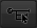
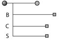

U Point® technology provides you with control points that enable you to isolate objects and areas in an image and selectively control tonality, contrast, and structure, without the need for complex selections or layer masks.
For more, visit www.upoint.com
Add Color Control Point
Click this button to change the mouse cursor and enable you to add a control point to the image. After selecting this button, click on the object or area in the image to adjust using a control point. After placing the control point on the image, you may control the object or area's tonality, contrast, and structure using the controls provided on the control point.
Color Control Point Controls
After adding a control point, you are provided with controls that can be used to affect the tonality, contrast, and structure selectively within the image. Control points can offer the following controls:
Size Slider
The Size slider affects the reach of the control point. By increasing this slider, you can affect objects similar to the object that the control point has been placed upon but that are further away from the control point. When set to 100%, the control point no longer bases its effect on the location of objects within the image, instead relying solely upon the color, tonality, and texture of the objects to determine whether or not to affect them. Decreasing this slider will make the control point affect only similar objects closer to the control point.
Brightness Slider
Control the brightness of the selected object or area.
Contrast Slider
Control the contrast of the selected object or area.
Structure Slider
Control the detail structure of the selected object or area.